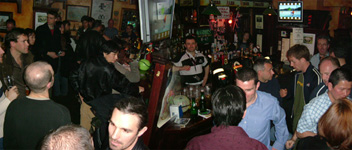
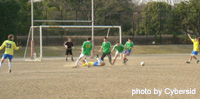
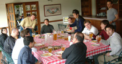
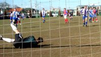
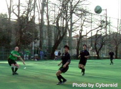
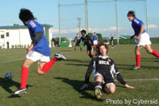
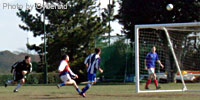
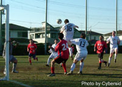

FORMAL TML LAUNCH BOOSTED BY ELVIS COMEBACK!
|  |
Paddy Foleys packed with over 100 players & supporters on Saturday night, for the Tokyo Metropolis League's 'late' launch party. |
Feb 28th, Roppongi, Tokyo.There's a guy works down Yoshinoya swears he's Elvis and he was spotted loitering outside Paddy Foley's on
Saturday night after being presumed dead for almost 27 years. Clearly the lure of the formal launch of The Metropolis League had been too much and an
impromptu gig from The King capped a rip-snorting evening. TML maestro Sid, and Paco, had of course planned long and hard for the event, which was
superbly attended by many of the teams and sponsors involved in the new league. There was also fantastic food, a very amusing video with photos of
players in the league 'doing their thing', blue-suede crooning and a raffle, which was only marred by French FC keeper "Elbow" Elliot walking off with about nine of the top
prizes, claiming the French were "having dinner upstairs." Tres amusant. Things looked bleak for the Swiss at the start of the raffle but, as always,
they sneaked a couple of late goals to win it in stoppage time. Even Elvis was speechless.
Rumours that Kev "The Kit" Gray will play at the TML award ceremony in a similar jet-black wig and winkle-pickers are as yet unconfirmed.
Congratulations must go to Sid and Paco for their tireless work in establishing TML, which has rapidly become THE league to be part of.
By Chip Shop
CELTS ELBERED ASIDE BY DUTCH
Feb 28th, OiFuto. A hatrick by Pieter Elbers helped the Dutch move up into 2nd position in the 2nd Division with a game in hand over the
teams above and below it. They couldn't have asked for a better start, getting 1-0 up on the Kanto Celts with less than a minute played. Celts drew
level after quarter of an hour, but goals 10 minutes either side of halftime, gave the flying Dutchmen a lead they held onto despite Celts pulling another
one back.
LANE & HAHNE NECK & NECK FOR GOLDEN BOOT
Feb 29th, YC&AC. Graeme Lane, captain of YC&AC, caught up with Swiss Kickers' Striker Karl
Hahne, in the hunt for this years Div 1 golden boot award, with a brace of goals against Jetro FC. In very windy conditions, both teams were
having difficulty controlling the ball on the hard dry surface and chances were at a premium. Going in 1-1 at half-time, YC&AC took the game to the opposition in the 2nd half,
with most of the play at the Jetro end. 2 more goals by YC&AC were enough to seal it and put them up to 3rd in Div 1 in what was described as '
a workman like performance to grind out a good win!' by their captain.
|
SHANE WIN 'BATTLE OF THE EIKAIWA'!
|  |
PENALTY! The appeal is rewarded and Shane go one ahead against Nova FC |
Feb 22nd, Oi Futo Dai ichi. Two of Japan's biggest English conversation schools battled it out on the football pitch in front of a crowd of at least 25 (plus a
couple of stray dogs) but it was Shane who came away the winners, beating Nova FC 2-0. A goal in each half, the first a penalty, were enough to doom the Nova boys for the 2nd week in
row, still missing their captain Daniel Bard. Shane himself was there to cheers his teachers along, very impressed in their performance as they continued to rise in the
2nd Division table.
Earlier in the day, Geckoes got their 2nd win at the expense of Barbarians, who are still searching for their point. This leaves them just a point
behind Shane and JETs but with a game in hand.
Sala moved into 3rd place after beating Maritizio. After going 2 down, Maritizio pulled one back and looked confident to go for an equalizer. Sala had other plans however,
and they soon found the back of the net again, holding on for a comfortable 3-1 victory that put them right back up the table.
more from Sala...
|
PERFIDIOUS DROP 1st POINTS!
|  |
Perfidious Albion (BEFC) bid farewell to Tim Williams after their draw with Vagabonds. Of course with a few more beers!!. |
Feb 21st, YC&AC. Perfidious Albion dropped their first league points as they were held to a 0-0 draw
by BFC Vagabonds in what was a send off game for long time BEFC player Tim Williams. They were lucky not to be forfieted a point as their bus dropped them off 5 mins before
kick off time, many looking a bit bedraggled from the previous nights partying. It was also a match that introduced new referee Pietro Cristo to the TML fold, and a very good
job he did as well. Vagabonds had arguably the best of chances, with one 35 yard volley producing a fine save from goalkeeper Giles Lever but at the end of the match , everyone
seemed happy with the draw. P.A. are looking set to be promoted to the 1st Division for next season, 6 points clear with just 3 games to play!
more from Vagabonds...
At Oi Futo, Swiss Kickers took over top spot in Division 1 by beating Nelson FC 6-0. Swiss got off to a great start, scoring in the opening minutes then went on
to score 3 in each half leaving them 3 points clear of Hibernian, who have a game in hand. more from Swiss...
|
YC&AC ON LANE TO RECOVERY
|  |
YC&AC keeper gets down to smother a shot from the French. |
Feb 15th, YC&AC. YC&AC captain, Graeme Lane led his team to their 2nd Victory with
a hattrick against France FC. A super strike in the 1st half, followed by 2 more in the 2nd half was enough to sink the French who only managed to get a
consolation goal just before full time. YC&AC with 7 points are still in a great position to challenge for the title with their final game against HIBS
looking like it could be a corker...but there's still a long way to go. more...
In the 2nd match of the day, BFC were sent to their first defeat by their arch rivals Swiss Kickers. Both teams were missing many key players, more so Swiss
perhaps, but it was BFC who seemed most affected. In a dazzling display of 'hoof the ball' BFC showed why they've been unable to beat the Swiss in the league
in over a decade. A goal in each half, the 2nd a cracker by their Dutch midfielder 'Flash', was enough to send BFC to their 1st loss since last October and
put Swiss back at the top of the table with Hibs on 12 points. more from BFC...
or more from Swiss...
|
HIBS LEAD THE WAY
|  |
Hibs striker Dave Thomas watches an effort sail over the bar. |
Feb 14th, St Mary's. Hibs midfielder Keita Narama found the back of the net for the 4th time this season, helping his team back into Div 1's
top spot. Fellow striker Dave Thomas also found the back of the net late in the 2nd half to join Keita in pursuit of the first Golden boot. Hibs didn't
have it all their own way though as Nelson pressed hard and went in 1-1 at the break. A quick goal in the 2nd half got Hibs back on track though, leaving
them in a prime position to challenge for this years title. more...
Perfidious Albion got their 4th straight win of the League, cementing their position at the top of Division 2. Their opposition, an under strength Nova FC
who's captain suffered an unfortunate broken ankle after being run off a pavement by a drunken salaryman last week, started brightly despite their lack of
players and looked set to force a draw. But it was one of Perfidious' goalies Keith Crowley, (playing outfield) who scored the winner just minutes from time to give the old 'BEFC' boys
the full 3 points.
OiFuto. Following Bolton's exploitation of the new interpretation of the offside rule this week, both Geckoes and the Dutch were subject to
some interesting interpretations in their TML fixture. Both teams fell foul of decisions that would lead to long discussions in any league but it was
Geckoes who yet again felt the hardest done by as they fell to their 2nd defeat.
|
"ALLEZ LES BLEUS!"
|  |
French midfielder Naoki Saito, skips past Jim Bryan of Sala in their 3-1 victory |
Feb 8th, YC&AC.
France FC finally got the win they've been looking for at the expense of SALA FC, moving them off the bottom of Div 1 for the 1st time this season. Getting off to a great
start, they were 2-0 up after only 5 minutes with a couple of well struck shots. With their charismatic captain not there to urge them on, (reportedly scouting for new talent
on foreign shores...well sunbathing anyway!) there was always the danger that France may fade away again, as they did against Swiss and Jetro.
A goal soon into the 2nd half eased their worries and sealed the Victory, with Sala getting a consolation goal 10 mins from time. Sala were left to ponder
their 2nd loss in 4 games and a meeting with their WM Cup final adversaries, BFC, on the 13th March to look forward to.
|  |
BFC forward Tomo, sees his close range shot go over the bar, just 1 of many BFC chances left begging. |
BFC blew their chance to go top again, letting YC&AC equalize in the dying moments to grab a point. Although BFC had the lions share of possession, a combination of poor finishing and resolute defending by YC&AC, kept them at bay. Finally (after many previous claims) they were awarded a penalty in the 2nd half, nicely tucked away by Peter Adolphus, but should have wrapped things up when they forged a couple of clear openings in front of goal. BFC's lack of ability in the 6 yard box, wasn't a affliction shared by YC&AC captain Graeme Lane, who nipped in front of the BFC defence in the dying seconds to latch onto a well placed free kick. A quick turn and shot at the near post robbed BFC of 2 points and left YC&AC in good position to challenge for the title still.
|  |
|
Swiss striker, David Pratt, rises to meet a corner. He scored 2 in their 7-4 victory over Maritizio.
|
Swiss Kickers recovered from their defeat last week, but conceded another 3 goals on their way to beating Maritizio. German striker Karl Hahne has his eyes on the Div 1 golden boot, scoring 4 in their victory and taking his tally to 6. It was not all one way traffic, as Maritizio put Swiss under pressure on a number of occasions, exploiting the weakness in the Swiss team from so many missing players. With games fixed far in advance, it's good to see that all teams suffer the same problems as missing players etc, no teams getting an advantage! Swiss will still be one of the favourites though!! more...
SHANE FINALLY GET GUNS BLAZING Sundays game at Nodai in Saitama produced the TML result of the day, with lowly Shane FC handing out a footballing lesson to an under performing Vagabonds side, which had previously boasted 7 points from it's opening 3 matches. Shane FC was clearly up for the game and was very organized and focused on the task at hand and began swiftly to take the sluggish Vagabonds apart. Sloppy play and poor organization led to Shane taking a 0-4 lead into half time. The Vagabonds, clearly shell shocked, simply had no answer to the onslaught and went on to concede a further 4 goals with the match ending 0-8. more...
In the other match of the day, JETs handed Celts their 2nd defeat in another high scoring match at Nodai. This puts JETs into 2nd place now, but with 2 teams only having played twice, things are wide open. more...
|
SHANE GUNNED DOWN BY CELTS!
Feb 1st, OiFuto Daini. Kanto Celts got the call Liverpool were screaming for the night before but never got. "Was it ball to hand, or hand to ball?"
Kazu had no doubt as the hapless Shane defender went in the book, and the ball in the goal from the penalty spot. Playing on the astro-turf (read that Asteroid
rock) pitch at OiFuto, both ref and players alike were often left confused since chalk lines drawn on the pitch for American Football & futsal, hadn't
been removed, This left the ground looking like some ancient Andean, Alien landing site from Chariots of the Gods.
Kanto Celts went on to win the game, but despite missing a 2nd half penalty, Shane did manage to get their 1st league goal through captain Neil Willis.
more...
Sala got their 2nd win of the campaign with a narrow 2-1 win over Nelson. Had the outcome of the game been different, a controversial moment
where a Sala goal was disallowed as the keeper was down injured, could have sparked problems. In the end though, young Brookey, who'd been unlucky not
to be credited with last weeks goal, scored one this week in their 2-1 victory.
|
|